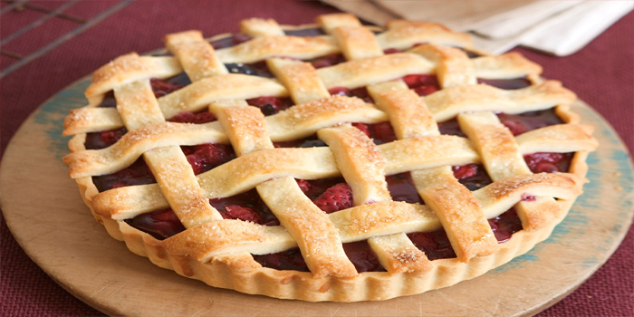

Mixed Berry Pies

Ingredients:
- 2-1/2 cups all-purpose flour
- 1/4 teaspoon salt
- 1 cup cold butter, cubed
- 6 to 8 tablespoons ice water
- 1 cup sugar
- 1/4 cup cornstarch
- Dash salt
- 1/3 cup water
- 1/2 teaspoon ground cinnamon, optional
- 1 cup fresh blueberries
- 1 cup fresh raspberries
- 1 cup halved fresh strawberries
- 3/4 cup fresh blackberries
- 1 tablespoon lemon juice
- 2 tablespoons butter
Time:
- Prep: 30m
- Cook: 55m
- Ready In: 1h 25m
Directions:
- In a large bowl, mix flour and salt; cut in butter until crumbly. Gradually add ice water, tossing with a fork until dough holds together when pressed. Divide dough into two portions so that one is slightly larger than the other. Shape each into a disk; wrap in plastic. Refrigerate 1 hour or overnight.
- For filling, in a large saucepan, whisk sugar, cornstarch, salt, water and, if desired, cinnamon until smooth; add blueberries. Bring to a boil; cook and stir 2 minutes or until thickened. Cool slightly.
- Preheat oven to 400°. Gently fold raspberries, strawberries, blackberries and lemon juice into blueberry mixture. On a lightly floured surface, roll out larger portion of dough to a 1/8-in.-thick circle; transfer to a 9-in. pie plate. Trim pastry to 1/2 in. beyond rim of plate. Add filling; dot with butter.
- Roll remaining dough to a 1/8-in.-thick circle; cut into 1/2-in.-wide strips. Arrange over filling in a lattice pattern. Trim and seal strips to edge of bottom pastry; flute edge. Bake 10 minutes.
- Reduce oven setting to 350°; bake 45-50 minutes or until crust is golden brown and filling is bubbly. Cool on a wire rack.